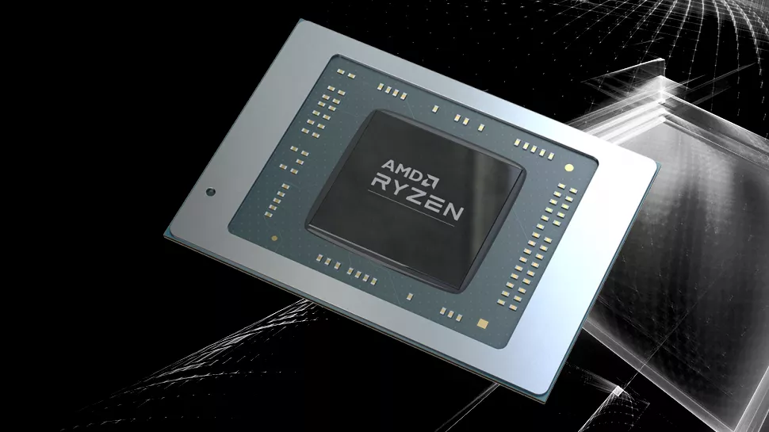

AMD, System Design Intern
Austin, TX | Jan - May 2024
- Power Management Feature Testing: Conducted testing on 15+ CPU/APU power management features to ensure compliance with SOC specifications on AMD’s latest AI APU processor, using both hardware and software validation tools.
- Automation for Efficiency: Developed Python scripts that automated SMU firmware validation, reducing testing time by 40% and saving hours of manual work.
- System Performance Debugging: Utilized oscilloscopes and analyzed board schematics to debug voltage regulator interface timing requirements within serial protocols, enhancing system performance.
- Technical Planning and Validation: Delivered a comprehensive test plan for validating Peak Current Control on the AMD APU processor, collaborating with architects and stakeholders to ensure seamless functionality in the Power Management Firmware.
- Cross-Functional Collaboration: Identified and resolved three key issues in PMM features and device drivers by creating Jira tickets and working closely with cross-functional engineering teams and management.
